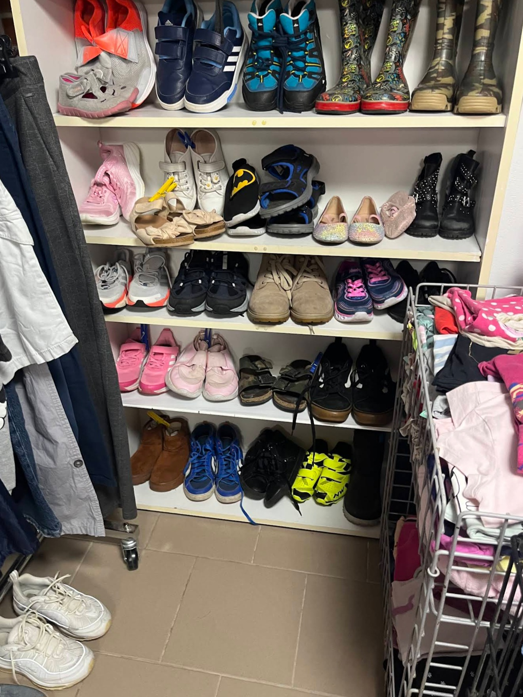
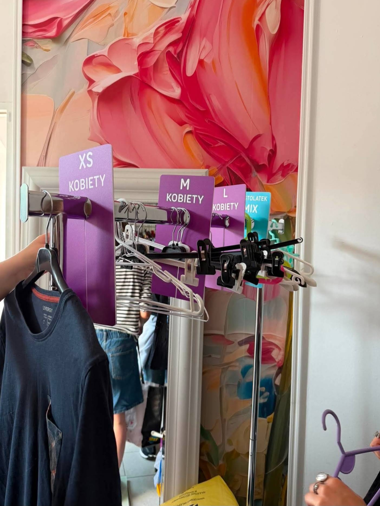
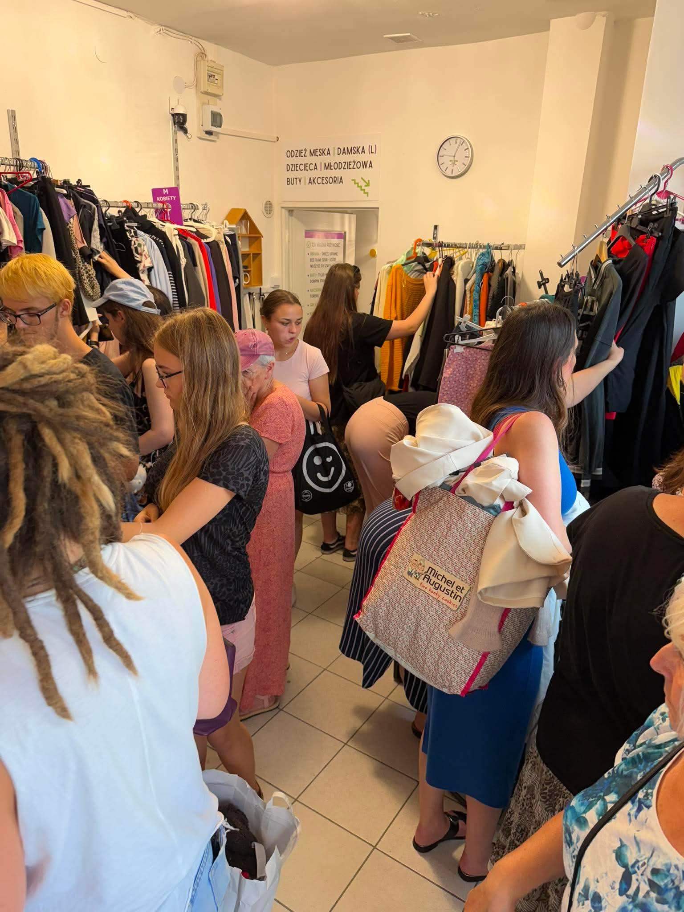

Historia
Dlaczego powstała Podzielnia WOW?
Poznaj naszą misję i cele, które napędzają Podzielnię WOW – od grupy przyjaciół z wielkim eco sercem po miejsce pełne drugich szans.
Czytaj więcej →

Odkryj nasze najnowsze wpisy, historie i praktyczne porady, które pomogą Ci ratować planetę przed śmieciową powodzią.

Poznaj naszą misję i cele, które napędzają Podzielnię WOW – od grupy przyjaciół z wielkim eco sercem po miejsce pełne drugich szans.
Czytaj więcej →
Praktyczne porady, dzięki którym Twoje ubrania nie skończą na wysypisku, tylko znajdą nowy dom.
Czytaj więcej →
Dlaczego bezgotówkowa wymiana ubrań to jeden z najprostszych sposobów, by ratować planetę przed śmieciową powodzią.
Czytaj więcej →